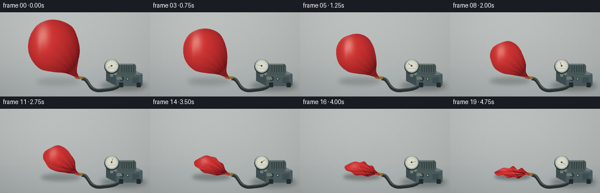
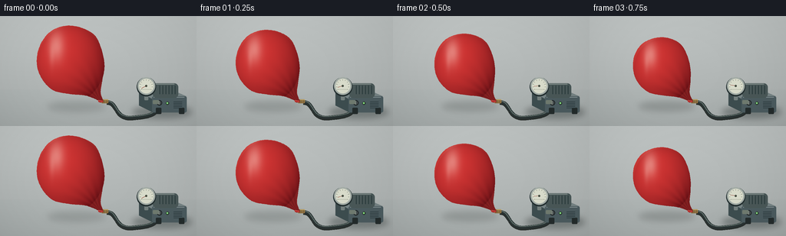

CODING AGENTS AS PIXEL WORLD MODELS
traex/GPT-6.1-Sol · phygen_020
点击播放 · 原生 RGB 像素
逐轮保存的候选
回放视频、检查图与代码变化。
每份候选均可单独播放。实际图片检查记录在下方工具轨迹中。
候选 01播放与检查图
点击播放 · 原生 RGB 像素


展开代码变化
--- 上一保存版本
+++ 本次保存版本
@@ -0,0 +1,158 @@
+from pathlib import Path
+import numpy as np
+from PIL import Image, ImageDraw, ImageFilter
+import artifact_io
+
+ROOT = Path(__file__).parent
+W,H,S = 256,144,3
+w,h=W*S,H*S
+Y,X=np.mgrid[0:h,0:w].astype(float); X/=S; Y/=S
+rng=np.random.default_rng(8)
+noise=rng.normal(0,0.32,(h,w))
+
+def smooth(points, steps=15):
+ p=np.array(points,float); result=[]
+ for i in range(len(p)):
+ a,b,c,d=[p[j%len(p)] for j in (i-1,i,i+1,i+2)]
+ for t in np.linspace(0,1,steps,endpoint=False):
+ v=.5*((2*b)+(-a+c)*t+(2*a-5*b+4*c-d)*t*t+(-a+3*b-3*c+d)*t**3)
+ result.append(tuple(v*S))
+ return result
+
+def line(draw,pts,fill,width=1):
+ draw.line([(x*S,y*S) for x,y in pts],fill=fill,width=max(1,int(width*S)),joint='curve')
+def ellipse(draw,box,fill,outline=None,width=1):
+ draw.ellipse(tuple(int(v*S) for v in box), fill=fill,outline=outline,width=int(width*S))
+def rect(draw,box,fill,radius=0,outline=None,width=1):
+ draw.rounded_rectangle(tuple(int(v*S) for v in box),radius=int(radius*S),fill=fill,outline=outline,width=int(width*S))
+def bezier(p,steps=90):
+ p=np.array(p); t=np.linspace(0,1,steps)[:,None]; return (1-t)**3*p[0]+3*(1-t)**2*t*p[1]+3*(1-t)*t*t*p[2]+t**3*p[3]
+
+# Warm gray seamless laboratory tabletop, fixed cinematic studio lighting.
+bg=np.empty((h,w,3),float)
+light=6*np.exp(-((X-55)/135)**2-((Y-26)/75)**2)
+for k,b in enumerate([186,191,190]): bg[:,:,k]=b+light-Y*.11
+plane=Y>96
+for k,b in enumerate([168,174,173]): bg[:,:,k]=np.where(plane,b+9*np.exp(-((X-100)/185)**2)-(Y-96)*.23,bg[:,:,k])
+bg += noise[:,:,None]
+base=Image.fromarray(np.uint8(np.clip(bg,0,255)))
+# Slightly defocused change from rear wall to table.
+base=base.filter(ImageFilter.GaussianBlur(.4*S))
+# Pump cast shadow.
+shadow=Image.new('RGBA',(w,h)); d=ImageDraw.Draw(shadow)
+ellipse(d,(172,117,250,134),(15,25,24,80)); shadow=shadow.filter(ImageFilter.GaussianBlur(4*S)); base=Image.alpha_composite(base.convert('RGBA'),shadow)
+# Curved vacuum line, robust reinforced hose running to sealed balloon neck.
+hose=np.vstack([bezier([(139,112),(155,112),(148,136),(175,132)]),bezier([(175,132),(202,130),(206,125),(204,113)])])
+d=ImageDraw.Draw(base)
+line(d,hose+(0,1.5),(42,48,46,255),5.5)
+line(d,hose,(43,53,53,255),4.2)
+line(d,hose+(-.15,-.8),(97,112,107,255),1)
+# Brushed metal pump housing; slight perspective.
+d.polygon([(180*S,99*S),(225*S,97*S),(243*S,105*S),(198*S,109*S)],fill=(120,133,134))
+d.polygon([(181*S,99*S),(199*S,109*S),(199*S,126*S),(181*S,117*S)],fill=(62,78,80))
+rect(d,(198,105,243,126),(76,92,96),2)
+line(d,[(200,106),(240,106)],(154,167,169),.8)
+rect(d,(203,120,210,128),(36,44,44),1);rect(d,(233,120,240,128),(36,44,44),1)
+# Motor rounded casing behind panel.
+rect(d,(199,88,232,107),(74,88,88),5)
+for xx in range(208,231,4): line(d,[(xx,91),(xx,102)],(40,57,58),1.2)
+line(d,[(203,89),(227,89)],(136,148,145),1)
+for yy in range(112,121,2): line(d,[(226,yy),(237,yy)],(40,55,59),.7)
+ellipse(d,(204,110,211,117),(30,36,38));ellipse(d,(205,111,210,116),(71,79,79));line(d,[(207,111.5),(207,115.5)],(178,184,176),.7)
+# Gauge pedestal and rim.
+rect(d,(188,101,193,110),(116,128,126),1)
+ellipse(d,(178,80,203,105),(36,48,49));ellipse(d,(179,80,202,103),(165,174,168));ellipse(d,(181,82,200,101),(219,222,205))
+for a in np.linspace(145,395,11):
+ ar=np.deg2rad(a); c=np.array([190.5,91.5]); r1=7.3;r2=8.5
+ line(d,[c+[r1*np.cos(ar),r1*np.sin(ar)],c+[r2*np.cos(ar),r2*np.sin(ar)]],(70,80,72),.45)
+line(d,[(184,96),(197,96)],(145,151,134),.4)
+# Pump connection and latex neck adapter.
+rect(d,(199,110,207,115),(113,124,113),1)
+rect(d,(132,109,141,114),(148,116,67),1)
+line(d,[(135,109.5),(141,109.5)],(210,184,113),.7)
+for xx in (136,139): line(d,[(xx,110),(xx,113.5)],(78,72,50),.55)
+
+initial=np.array([(134,111),(131,100),(133,85),(136,65),(132,43),(123,25),(105,15),(84,13),(65,21),(52,39),(48,61),(54,81),(69,97),(91,102),(111,104),(127,110),(130,113)],float)
+middle=np.array([(134,111),(129,102),(128,88),(121,76),(116,69),(108,62),(98,59),(86,64),(76,71),(73,81),(77,91),(83,100),(95,106),(108,108),(118,110),(127,111),(130,113)],float)
+final=np.array([(134,111),(128,106),(122,101),(115,104),(108,98),(101,102),(92,101),(82,105),(76,109),(81,114),(91,114),(99,118),(109,116),(117,119),(123,116),(129,113),(131,113)],float)
+
+frames=[]
+for frame in range(20):
+ t=frame/19
+ # Air removal is steady at first, followed by rapid membrane buckling.
+ if t<.55:
+ a=(t/.55)**.93
+ pts=initial*(1-a)+middle*a
+ else:
+ a=(t-.55)/.45; a=1-(1-a)**1.3
+ pts=middle*(1-a)+final*a
+ collapse=np.clip((t-.28)/.72,0,1)
+ # Very small coherent suction-induced flutter in slack latex only.
+ pts[2:15,0]+=(.35*np.sin(frame*1.7+np.arange(13)*.85))*collapse
+ pts[2:15,1]+=(.35*np.sin(frame*1.35+np.arange(13)*1.3))*collapse
+ mask=Image.new('L',(w,h)); md=ImageDraw.Draw(mask); md.polygon(smooth(pts),fill=255)
+ # A soft contact shadow becomes compact and stronger as the skin comes down.
+ im=base.copy()
+ sh=Image.new('RGBA',(w,h)); sd=ImageDraw.Draw(sh)
+ ellipse(sd,(62+14*t,112-1*t,137,125-4*t),(37,43,39,int(42+65*t)))
+ sh=sh.filter(ImageFilter.GaussianBlur((4.2-1.7*t)*S))
+ im=Image.alpha_composite(im,sh)
+ # Latex ellipsoid normals, diffuse fill, near-grazing translucency and area-light reflections.
+ xmin,ymin=pts[:,0].min(),pts[:,1].min(); xmax,ymax=pts[:,0].max(),pts[:,1].max()
+ cx=(xmin+xmax)/2; cy=(ymin+ymax)/2; rx=(xmax-xmin)/2; ry=(ymax-ymin)/2
+ u=(X-cx)/rx; v=(Y-cy)/ry
+ z=np.sqrt(np.clip(1-u*u-v*v,0,1))
+ diff=np.clip(.40+.44*z-.23*u-.22*v,.18,1.1)
+ # Puckering radiates from the sealed neck and becomes deep persistent crumpling.
+ dx=X-130;dy=Y-111
+ theta=np.arctan2(dy,dx); dist=np.sqrt(dx*dx+dy*dy)
+ neckfold=np.sin(theta*20+dist*.07)*np.exp(-dist/21)*(0.12+.30*collapse)
+ # Cloth-like diagonal nested folds on the final collapsed rubber skin.
+ fold=np.zeros_like(X)
+ fold_paths=[((80,109),(102,105),(125,110),1.2),((89,115),(109,111),(127,112),1.0),((89,102),(112,108),(127,111),1.1),((103,100),(108,107),(116,116),.9),((77,109),(91,111),(108,117),.8)]
+ for A,B,C,fw in fold_paths:
+ # moving crease geometry interpolated from current upper body down to resting membrane
+ shift=(1-collapse)*(ymin-98)*.30
+ A=np.array(A)+[0,shift];B=np.array(B)+[0,shift];C=np.array(C)+[0,shift]
+ # quadratic path sampled, nearest signed distance uses its local tangent
+ nearest=np.ones_like(X)*1e5;signed=np.zeros_like(X)
+ for q in np.linspace(0,1,22):
+ pos=(1-q)**2*A+2*(1-q)*q*B+q*q*C
+ tangent=2*(1-q)*(B-A)+2*q*(C-B); tangent/=np.linalg.norm(tangent)
+ dd=(X-pos[0])**2+(Y-pos[1])**2
+ update=dd<nearest; nearest=np.where(update,dd,nearest)
+ signed=np.where(update,(X-pos[0])*(-tangent[1])+(Y-pos[1])*tangent[0],signed)
+ width=fw*(1.3-.3*collapse)
+ fold+=(-.28*np.exp(-nearest/(width**2))+.19*np.exp(-(signed-1.6)**2/(width**2*1.1))*np.exp(-nearest/80))*collapse**1.35
+ diff+=neckfold+fold
+ rgb=np.empty((h,w,3))
+ for k,(dark,bright) in enumerate([(83,219),(10,57),(16,55)]):
+ rgb[:,:,k]=dark+(bright-dark)*diff
+ # Broad pale keylight on stretched latex, transitioning to many narrower reflections.
+ shine=np.exp(-((u+.42)/.22)**2-((v+.48)/.38)**2)*(1-.65*collapse)
+ shine2=np.exp(-((u+.56)/.075)**2-((v+.23)/.31)**2)*(1-.8*collapse)
+ highlight=shine*.42+shine2*.13
+ for k,c in enumerate([255,229,215]): rgb[:,:,k]=rgb[:,:,k]*(1-highlight)+c*highlight
+ rim=(1-z)**7*(1-collapse*.55)
+ rgb+=rim[:,:,None]*np.array([19,12,9])[None,None,:]
+ rgb+=noise[:,:,None]*.65
+ skin=Image.fromarray(np.uint8(np.clip(rgb,0,255))).convert('RGBA')
+ im.paste(skin,(0,0),mask)
+ # Latex at the sealed neck fits tightly around the brass tube; subtle rolled lip.
+ dr=ImageDraw.Draw(im)
+ line(dr,[(128,111),(134,111.8)],(186,52,48),2.8)
+ line(dr,[(128.5,110.3),(134,111)],(236,112,94),.65)
+ line(dr,[(134,110),(134.3,113)],(112,33,30),.8)
+ # Gauge indicates increasingly strong vacuum; motor status remains lit.
+ angle=np.deg2rad(150+235*t)
+ tip=(190.5+6.8*np.cos(angle),91.5+6.8*np.sin(angle))
+ line(dr,[(190.5,91.5),tip],(139,52,39),.85)
+ ellipse(dr,(189.3,90.3,191.7,92.7),(70,77,65))
+ ellipse(dr,(216,112,220,116),(27,42,32));ellipse(dr,(216.7,112.7,219.3,115.3),(131,211,126))
+ # Vignette and high-quality downsampling.
+ arr=np.array(im.convert('RGB')).astype(float)
+ vig=1-.075*((X-125)/174)**2-.045*((Y-66)/110)**2
+ arr*=vig[:,:,None]
+ out=Image.fromarray(np.uint8(np.clip(arr,0,255))).resize((W,H),Image.Resampling.LANCZOS)
+ frames.append(np.array(out))
+artifact_io.save(np.stack(frames),ROOT)
可观测工具轨迹
实际执行的命令与返回图片。
命令 1exit 0
/bin/bash -lc 'ls -la; cat prompt.txt; cat GENERATION_RULES.md; cat task_spec.json'
命令 2exit 0
/bin/bash -lc "cat artifact_io.py; python - <<'PY'
import numpy, PIL
print('ready')
PY"命令 3exit 0
/bin/bash -lc "cat > generate.py <<'PY'
from pathlib import Path
import numpy as np
from PIL import Image, ImageDraw, ImageFilter
import artifact_io
ROOT = Path(__file__).parent
W,H,S = 256,144,3
w,h=W*S,H*S
Y,X=np.mgrid[0:h,0:w].astype(float); X/=S; Y/=S
rng=np.random.default_rng(8)
noise=rng.normal(0,0.32,(h,w))
def smooth(points, steps=15):
p=np.array(points,float); result=[]
for i in range(len(p)):
a,b,c,d=[p[j%len(p)] for j in (i-1,i,i+1,i+2)]
for t in np.linspace(0,1,steps,endpoint=False):
v=.5*((2*b)+(-a+c)*t+(2*a-5*b+4*c-d)*t*t+(-a+3*b-3*c+d)*t**3)
result.append(tuple(v*S))
return result
def line(draw,pts,fill,width=1):
draw.line([(x*S,y*S) for x,y in pts],fill=fill,width=max(1,int(width*S)),joint='curve')
def ellipse(draw,box,fill,outline=None,width=1):
draw.ellipse(tuple(int(v*S) for v in box), fill=fill,outline=outline,width=int(width*S))
def rect(draw,box,fill,radius=0,outline=None,width=1):
draw.rounded_rectangle(tuple(int(v*S) for v in box),radius=int(radius*S),fill=fill,outline=outline,width=int(width*S))
def bezier(p,steps=90):
p=np.array(p); t=np.linspace(0,1,steps)[:,None]; return (1-t)**3*p[0]+3*(1-t)**2*t*p[1]+3*(1-t)*t*t*p[2]+t**3*p[3]
# Warm gray seamless laboratory tabletop, fixed cinematic studio lighting.
bg=np.empty((h,w,3),float)
light=6*np.exp(-((X-55)/135)**2-((Y-26)/75)**2)
for k,b in enumerate([186,191,190]): bg[:,:,k]=b+light-Y*.11
plane=Y>96
for k,b in enumerate([168,174,173]): bg[:,:,k]=np.where(plane,b+9*np.exp(-((X-100)/185)**2)-(Y-96)*.23,bg[:,:,k])
bg += noise[:,:,None]
base=Image.fromarray(np.uint8(np.clip(bg,0,255)))
# Slightly defocused change from rear wall to table.
base=base.filter(ImageFilter.GaussianBlur(.4*S))
# Pump cast shadow.
shadow=Image.new('RGBA',(w,h)); d=ImageDraw.Draw(shadow)
ellipse(d,(172,117,250,134),(15,25,24,80)); shadow=shadow.filter(ImageFilter.GaussianBlur(4*S)); base=Image.alpha_composite(base.convert('RGBA'),shadow)
# Curved vacuum line, robust reinforced hose running to sealed balloon neck.
hose=np.vstack([bezier([(139,112),(155,112),(148,136),(175,132)]),bezier([(175,132),(202,130),(206,125),(204,113)])])
d=ImageDraw.Draw(base)
line(d,hose+(0,1.5),(42,48,46,255),5.5)
line(d,hose,(43,53,53,255),4.2)
line(d,hose+(-.15,-.8),(97,112,107,255),1)
# Brushed metal pump housing; slight perspective.
d.polygon([(180*S,99*S),(225*S,97*S),(243*S,105*S),(198*S,109*S)],fill=(120,133,134))
d.polygon([(181*S,99*S),(199*S,109*S),(199*S,126*S),(181*S,117*S)],fill=(62,78,80))
rect(d,(198,105,243,126),(76,92,96),2)
line(d,[(200,106),(240,106)],(154,167,169),.8)
rect(d,(203,120,210,128),(36,44,44),1);rect(d,(233,120,240,128),(36,44,44),1)
# Motor rounded casing behind panel.
rect(d,(199,88,232,107),(74,88,88),5)
for xx in range(208,231,4): line(d,[(xx,91),(xx,102)],(40,57,58),1.2)
line(d,[(203,89),(227,89)],(136,148,145),1)
for yy in range(112,121,2): line(d,[(226,yy),(237,yy)],(40,55,59),.7)
ellipse(d,(204,110,211,117),(30,36,38));ellipse(d,(205,111,210,116),(71,79,79));line(d,[(207,111.5),(207,115.5)],(178,184,176),.7)
# Gauge pedestal and rim.
rect(d,(188,101,193,110),(116,128,126),1)
ellipse(d,(178,80,203,105),(36,48,49));ellipse(d,(179,80,202,103),(165,174,168));ellipse(d,(181,82,200,101),(219,222,205))
for a in np.linspace(145,395,11):
ar=np.deg2rad(a); c=np.array([190.5,91.5]); r1=7.3;r2=8.5
line(d,[c+[r1*np.cos(ar),r1*np.sin(ar)],c+[r2*np.cos(ar),r2*np.sin(ar)]],(70,80,72),.45)
line(d,[(184,96),(197,96)],(145,151,134),.4)
# Pump connection and latex neck adapter.
rect(d,(199,110,207,115),(113,124,113),1)
rect(d,(132,109,141,114),(148,116,67),1)
line(d,[(135,109.5),(141,109.5)],(210,184,113),.7)
for xx in (136,139): line(d,[(xx,110),(xx,113.5)],(78,72,50),.55)
initial=np.array([(134,111),(131,100),(133,85),(136,65),(132,43),(123,25),(105,15),(84,13),(65,21),(52,39),(48,61),(54,81),(69,97),(91,102),(111,104),(127,110),(130,113)],float)
middle=np.array([(134,111),(129,102),(128,88),(121,76),(116,69),(108,62),(98,59),(86,64),(76,71),(73,81),(77,91),(83,100),(95,106),(108,108),(118,110),(127,111),(130,113)],float)
final=np.array([(134,111),(128,106),(122,101),(115,104),(108,98),(101,102),(92,101),(82,105),(76,109),(81,114),(91,114),(99,118),(109,116),(117,119),(123,116),(129,113),(131,113)],float)
frames=[]
for frame in range(20):
t=frame/19
# Air removal is steady at first, followed by rapid membrane buckling.
if t<.55:
a=(t/.55)**.93
pts=initial*(1-a)+middle*a
else:
a=(t-.55)/.45; a=1-(1-a)**1.3
pts=middle*(1-a)+final*a
collapse=np.clip((t-.28)/.72,0,1)
# Very small coherent suction-induced flutter in slack latex only.
pts[2:15,0]+=(.35*np.sin(frame*1.7+np.arange(13)*.85))*collapse
pts[2:15,1]+=(.35*np.sin(frame*1.35+np.arange(13)*1.3))*collapse
mask=Image.new('L',(w,h)); md=ImageDraw.Draw(mask); md.polygon(smooth(pts),fill=255)
# A soft contact shadow becomes compact and stronger as the skin comes down.
im=base.copy()
sh=Image.new('RGBA',(w,h)); sd=ImageDraw.Draw(sh)
ellipse(sd,(62+14*t,112-1*t,137,125-4*t),(37,43,39,int(42+65*t)))
sh=sh.filter(ImageFilter.GaussianBlur((4.2-1.7*t)*S))
im=Image.alpha_composite(im,sh)
# Latex ellipsoid normals, diffuse fill, near-grazing translucency and area-light reflections.
xmin,ymin=pts[:,0].min(),pts[:,1].min(); xmax,ymax=pts[:,0].max(),pts[:,1].max()
cx=(xmin+xmax)/2; cy=(ymin+ymax)/2; rx=(xmax-xmin)/2; ry=(ymax-ymin)/2
u=(X-cx)/rx; v=(Y-cy)/ry
z=np.sqrt(np.clip(1-u*u-v*v,0,1))
diff=np.clip(.40+.44*z-.23*u-.22*v,.18,1.1)
# Puckering radiates from the sealed neck and becomes deep persistent crumpling.
dx=X-130;dy=Y-111
theta=np.arctan2(dy,dx); dist=np.sqrt(dx*dx+dy*dy)
neckfold=np.sin(theta*20+dist*.07)*np.exp(-dist/21)*(0.12+.30*collapse)
# Cloth-like diagonal nested folds on the final collapsed rubber skin.
fold=np.zeros_like(X)
fold_paths=[((80,109),(102,105),(125,110),1.2),((89,115),(109,111),(127,112),1.0),((89,102),(112,108),(127,111),1.1),((103,100),(108,107),(116,116),.9),((77,109),(91,111),(108,117),.8)]
for A,B,C,fw in fold_paths:
# moving crease geometry interpolated from current upper body down to resting membrane
shift=(1-collapse)*(ymin-98)*.30
A=np.array(A)+[0,shift];B=np.array(B)+[0,shift];C=np.array(C)+[0,shift]
# quadratic path sampled, nearest signed distance uses its local tangent
nearest=np.ones_like(X)*1e5;signed=np.zeros_like(X)
for q in np.linspace(0,1,22):
pos=(1-q)**2*A+2*(1-q)*q*B+q*q*C
tangent=2*(1-q)*(B-A)+2*q*(C-B); tangent/=np.linalg.norm(tangent)
dd=(X-pos[0])**2+(Y-pos[1])**2
update=dd<nearest; nearest=np.where(update,dd,nearest)
signed=np.where(update,(X-pos[0])*(-tangent[1])+(Y-pos[1])*tangent[0],signed)
width=fw*(1.3-.3*collapse)
fold+=(-.28*np.exp(-nearest/(width**2))+.19*np.exp(-(signed-1.6)**2/(width**2*1.1))*np.exp(-nearest/80))*collapse**1.35
diff+=neckfold+fold
rgb=np.empty((h,w,3))
for k,(dark,bright) in enumerate([(83,219),(10,57),(16,55)]):
rgb[:,:,k]=dark+(bright-dark)*diff
# Broad pale keylight on stretched latex, transitioning to many narrower reflections.
shine=np.exp(-((u+.42)/.22)**2-((v+.48)/.38)**2)*(1-.65*collapse)
shine2=np.exp(-((u+.56)/.075)**2-((v+.23)/.31)**2)*(1-.8*collapse)
highlight=shine*.42+shine2*.13
for k,c in enumerate([255,229,215]): rgb[:,:,k]=rgb[:,:,k]*(1-highlight)+c*highlight
rim=(1-z)**7*(1-collapse*.55)
rgb+=rim[:,:,None]*np.array([19,12,9])[None,None,:]
rgb+=noise[:,:,None]*.65
skin=Image.fromarray(np.uint8(np.clip(rgb,0,255))).convert('RGBA')
im.paste(skin,(0,0),mask)
# Latex at the sealed neck fits tightly around the brass tube; subtle rolled lip.
dr=ImageDraw.Draw(im)
line(dr,[(128,111),(134,111.8)],(186,52,48),2.8)
line(dr,[(128.5,110.3),(134,111)],(236,112,94),.65)
line(dr,[(134,110),(134.3,113)],(112,33,30),.8)
# Gauge indicates increasingly strong vacuum; motor status remains lit.
angle=np.deg2rad(150+235*t)
tip=(190.5+6.8*np.cos(angle),91.5+6.8*np.sin(angle))
line(dr,[(190.5,91.5),tip],(139,52,39),.85)
ellipse(dr,(189.3,90.3,191.7,92.7),(70,77,65))
ellipse(dr,(216,112,220,116),(27,42,32));ellipse(dr,(216.7,112.7,219.3,115.3),(131,211,126))
# Vignette and high-quality downsampling.
arr=np.array(im.convert('RGB')).astype(float)
vig=1-.075*((X-125)/174)**2-.045*((Y-66)/110)**2
arr*=vig[:,:,None]
out=Image.fromarray(np.uint8(np.clip(arr,0,255))).resize((W,H),Image.Resampling.LANCZOS)
frames.append(np.array(out))
artifact_io.save(np.stack(frames),ROOT)
PY
python generate.py"视觉工具实际返回图片 1

保存候选 1 份；完成命令 3 次；可验证图片返回 1 张。原始 API 响应与完整日志保留在本地。